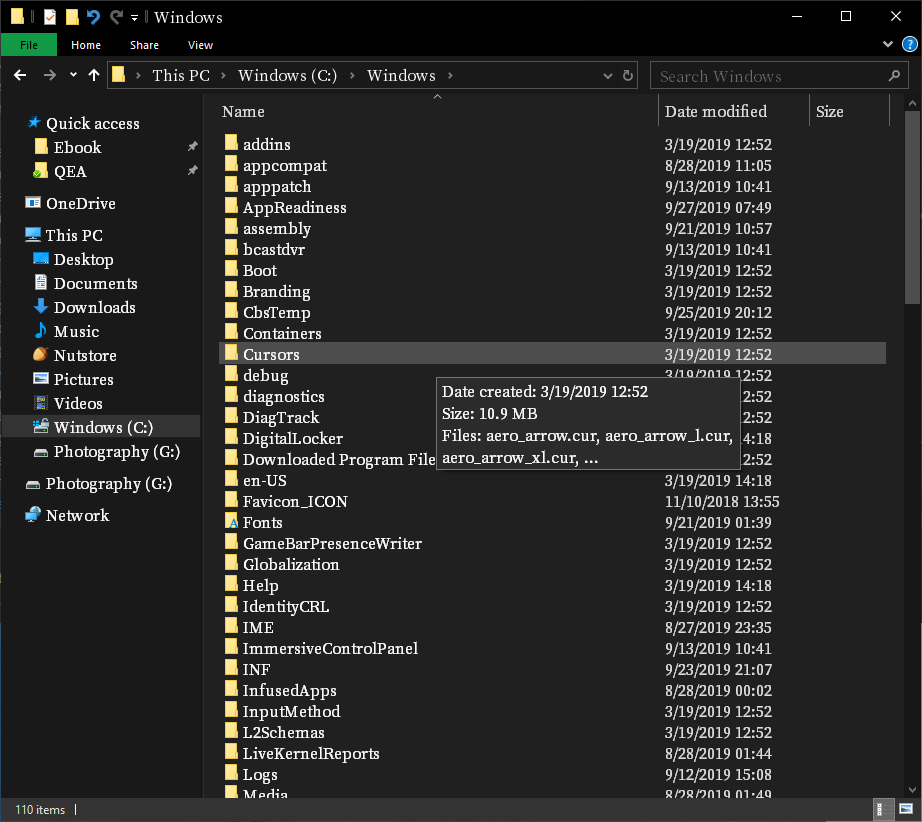
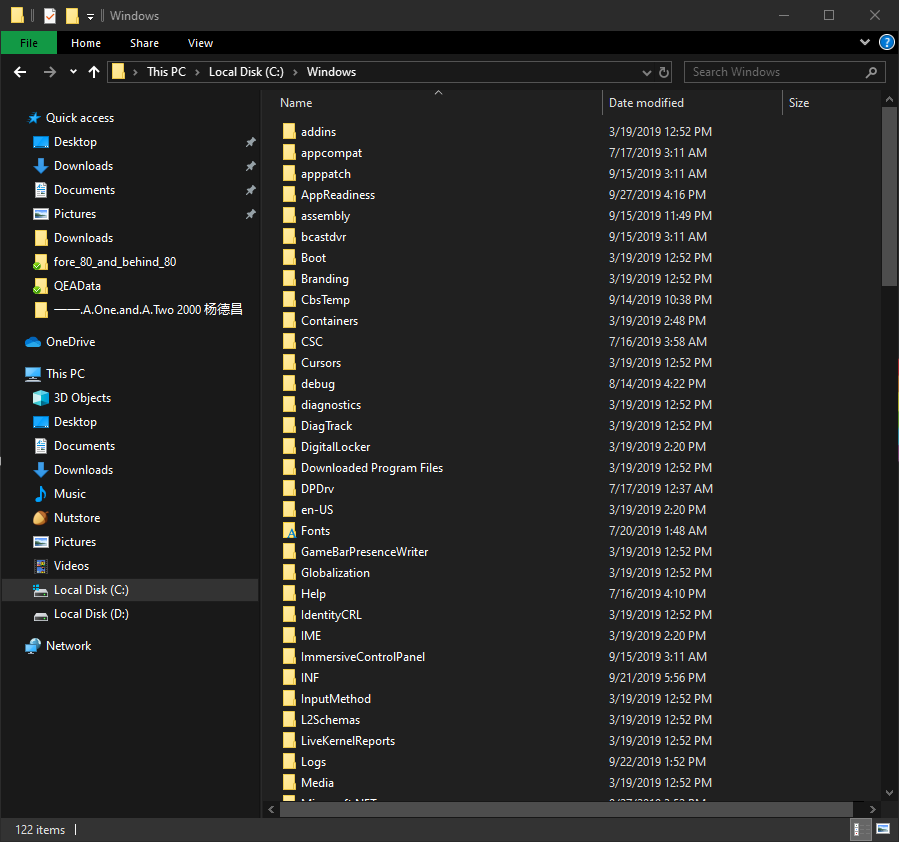

在便携笔记本上，高清显示屏存在的字体过小问题令人十分恼火。 13或14寸的小屏幕往往要承载主人1080P甚至2K分辨率的视觉需求，假若这时 Display 页面 Scale and layout 栏配置的是 100% & 1080P，那简直要强迫用户练出一双丹凤眼来！大多数Windows用户面临这个问题会选择直接更改字体大小，将100%更改为125%，甚至是150%，但获得的页面显示效果却不尽如人意——字体是变大了，但界面窗口也成倍数地被放大。也就是说当我们的目的仅是调整字体大小时，Windows直接默认为降低分辨率（加了放大镜）。
对于不经常使用电脑或者影音用户来说这并非不可接受，但对于需要在显示屏上进行大量阅读以及码字输出的工作者而言，这太操蛋了！不说界面窗口被放大以后浏览界面内容像挤牙膏一样滑一点看一点，用户相当一部分注意力被迫要分配到“滑滑滑”上。而且显示屏上顶多可以同时看到两至三个任务窗口，如此一来 Alt + Tab 操作（窗口切换）频率立马上升，用户精力更易分散了，这哪能行？！
我之前被这个问题困扰了许久，尤其是入了14寸的TP以后，只能被迫眯着眼，长时间下来，TMD感觉我额上的皱纹都多了。 前几日在Github上逛热门项目的时候，偶然注意到Adobe和Google联合开源的思源宋体，我就心血来潮折腾了下。随着适配，令我惊喜的是，上面的问题得到了初步解决，故抛砖于此，为上面的问题提供一个不完美的解决方案（系统中部分UI仍是“老毛病”）。 需要说明的是，下文中的操作结果同样可通过修改系统注册表（比较繁琐，吐槽下Windows非人性的系统文件架构）实现。
选择适合自己的字体文件（思源宋体）
下载完成后不需要解压，直接在压缩包内双击欲安装的字体，并在弹出的界面中点击安装即可（Win8 以后的系统）。
点击页面上方code按钮，下载开源软件 No! MeiryoUI（这是直接修改系统注册表的替代方案）。
同样不需解压，直接双击压缩包内的exe程序，然后大家就可以按照自己的使用习惯，在该软件界面方便地修改系统字体选项了。需要注意的是，字体选择列表中思源宋体的名称为“思源宋体 CN”（不同设备可能会有不一样，备择选项：Source Han Serif、Noto Serif CJK）。
No! MeiryoUI 软件页面
点击SELECT，即可进入字体设定页面。左栏选择目标字体，右栏选择字体大小。
字体设定页面
更改之后资源管理器的显示效果（100% & 1080P）如下，我电脑屏幕是14英寸，大小11号比较符合我的口胃：

之前的鸟样：
